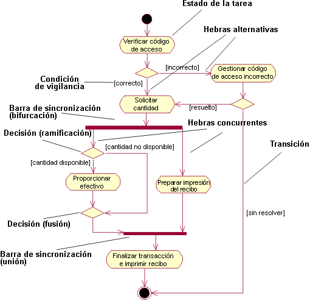

|
El flujo de sucesos de un guión de uso describe qué debe hacer el sistema para proporcionar valor a un actor. Consta de
una secuencia de tareas que en conjunto produce algo para el actor. El flujo de sucesos consta de un flujo básico, y
uno o varios flujos alternativos.
El flujo de sucesos de un guión de uso se puede describir gráficamente con la ayuda de un diagrama de actividad. Este
diagrama muestra:
-
Estados de actividad, que representan el rendimiento de una tarea o paso en el flujo de sucesos.
-
Transiciones que muestran qué
estado de actividad sigue al anterior. A veces se hace referencia a este tipo de transición como transición de
terminación, ya que difiere de una transición en que no requiere un suceso desencadenante explícito, se desencadena
con la terminación de la tarea que representa el estado de actividad.
-
Decisiones para las que se define
un conjunto de condiciones de vigilancia. Estas condiciones de vigilancia controlan qué transición (de un
conjunto de transiciones alternativas) sigue una vez se ha completado la tarea. Las decisiones y las condiciones de
vigilancia le permiten mostrar hebras alternativas en el flujo de sucesos de un guión de uso.
-
Barras de sincronización que puede utilizar para mostrar subflujos paralelos. Las barras de sincronización
le permiten mostrar hebras concurrentes en el flujo de sucesos de un guión de uso.

Un diagrama de actividad simplificado para el guión de uso Retirar dinero en el modelo de guión de uso de un cajero
automático.
Un diagrama de actividad es un caso especial de diagrama de gráfico de estados donde todos o la mayoría de los estados
son estados de actividad y donde todas o la mayoría de las transiciones están desencadenadas por la terminación de
acciones en los estados de origen.
|